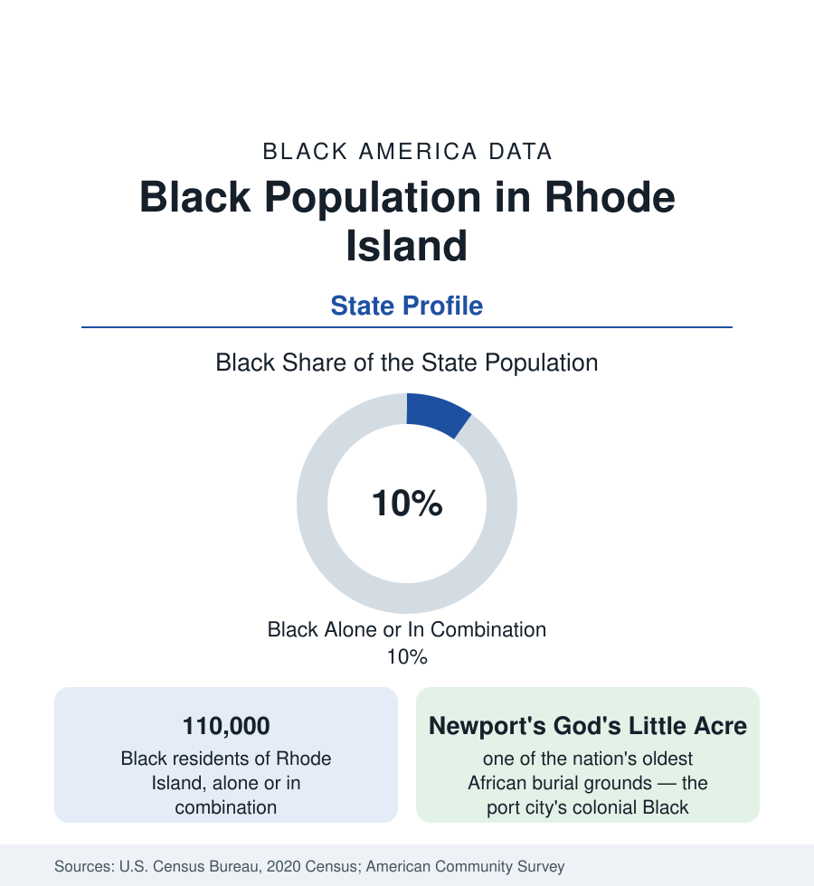

Black Census
Black Population in Rhode Island: The Smallest State's Old Ports
About 110,000 Black Rhode Islanders — one in ten residents — in the nation's smallest state, with Black port communities older than the republic. The census profile.

Rhode Island holds about 110,000 Black residents — Black alone or in combination — roughly one in ten of its people, with Black alone at about 75,000, or 6.8 percent. It is a small population in the smallest state, and one of the oldest in the nation: Newport's free Black community of the colonial era, Providence's nineteenth-century Black institutions, and a modern population built by the industrial and service economies of the bay. This article profiles it in the census data.
Providence and the Black Belt of the Bay
Providence, the capital, holds the largest share: the city is roughly a sixth to a fifth Black (some 30,000 to 35,000 residents), concentrated in the South Side (the districts along Elmwood Avenue and Broad Street), the West End, and the older neighborhoods around the colleges — a community built by the jewelry and textile mills' labor demand, the railroads, and, in the modern era, the hospitals and universities that are the city's employers. Pawtucket, the mill city to the northeast, is roughly a sixth Black, with Central Falls (the state's smallest and densest city) at a comparable share. East Providence, Woonsocket (the northern mill city), and Cranston hold the smaller suburban and mill-town communities; the state's Black population is concentrated in the Providence metro's ring, with the coastal and rural counties below 2 percent almost everywhere.
Newport and the Colonial Layer
Newport's Black community is the profile's historical signature. The colonial port — a center of the transatlantic slave trade in the eighteenth century and, simultaneously, of one of the earliest free Black communities in America — left God's Little Acre, the burial ground on Farewell Street where the headstones of free and enslaved Black Newporters survive as one of the nation's oldest African burial sites, and the African church and school traditions of the 1820s. The modern Newport Black population is small (a few percent of the city), but the heritage layer — the Newport Black History walking routes, the preservation of the burial ground — is nationally significant, and the city's data sit inside the state profile as its deepest stratum. The same era's Providence layer (the early Black churches on the East Side's edge, the abolitionist movement's Rhode Island chapter) completes the colonial-to-free arc.
Composition and Indicators
Rhode Island's modern composition mirrors Massachusetts's in miniature: a substantial Caribbean and West African immigrant layer (Cape Verdean communities are significant in Providence and East Providence, Haitian and Dominican communities in the metro, Liberian in the suburbs) over a native-born base whose families in Providence and Pawtucket date to the mill era. The indicators run at the New England pattern's difficult end within the region: the state's overall prosperity figures are middling, and Black medians in the Providence metro sit below the state's with the housing-cost pressure of the Boston metro's spillover; the health and education tables of the section place Black Rhode Island in the region's mid-to-lower band. The state has no HBCU; Brown University, Rhode Island College, and the Community College of Rhode Island carry the higher-education layer, with Brown's own slavery-and-justice research (the university's 2006 report on its ties to slavery, among the first of its kind) a documented institutional thread.
Change and the Estimates
The estimates show slow growth — Providence's suburbs and the Pawtucket-Central Falls corridor gaining, the city core stable, the coastal towns flat — with the immigrant layer's second generation the moving part of the school data. The state's smallness makes the profile unusually trackable: a few thousand people move any series, and the census's annual estimates are the population's definitive record year to year.
Reading the Rhode Island Numbers
The military thread runs through the modern composition as well: the naval installations of the bay (Newport's Naval Station and the Quonset corridor) have cycled Black service families into the state's suburbs for generations, a layer visible in the veteran data and in the Middletown and North Kingstown tracts around the bases.
Rhode Island is the smallest complete profile in this section after Vermont's and Maine's: 110,000 people, a colonial burial ground as its signature site, a Providence metro community as its present tense. Its weight is in the record's depth — the oldest Black places in America are, disproportionately, in the smallest state's ports.
More in Black Census
The Black Population of the United States: Size, Definitions, and Distribution
The Black population of the United States totals 52.8 million — 15.4 percent of the nation. How the Census Bureau defines and counts the population, and where it lives.
Black Median Household Income in the United States
Black median household income stands at $56,490 in the Census Bureau's annual income report — how the figure is measured, how it compares, and what drives it.
The Black Poverty Rate: Levels, Children, and the Long Trend
The official Black poverty rate is 17.1 percent — against 11.1 percent nationally and 7.7 percent for non-Hispanic White Americans. How poverty is measured and what the data show.
Source: U.S. Census Bureau, 2020 Census; American Community Survey; Population Estimates Program.